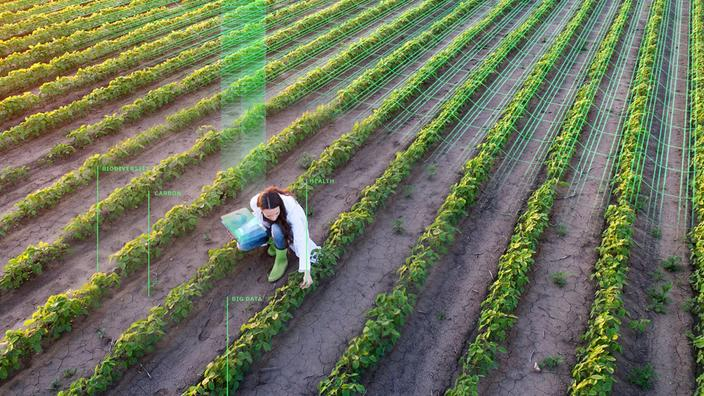
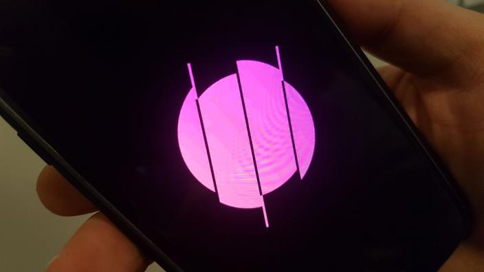

Start-Up Nation

Après avoir vendu une première start-up à Microsoft, le français Pierre Valade s’attaque depuis un an au marché de la confidentialité et la sécurité des données. Il vient de lever 8 millions de dollars auprès du fonds Balderton.
Lire la suite...Deux ans après avoir quitté le spécialiste de l’audio haut de gamme, Quentin Sannié lance une start-up dédiée à l’étude de l’état de santé des sols.
Lire la suite... Sans contexte, les données de transport ne valent rien. C’est là qu’entrent en jeu les géodata scientists, comme Jean-Marc Favaro, cofondateur de la start-up Fluctuo. Cette société a conçu une interface de programmation (API) qui consulte toutes les 15 minutes les applications de vélos, scooters et trottinettes en libre-service. Elle en extrait des données brutes dont le géodata scientist va tirer des enseignements.
Lire la suite...L’application franco-américaine, qui a levé 28 millions de dollars en octobre, a récemment reçu le soutien d’artistes internationaux tels que The Weeknd ou Snoop Dogg.
Lire la suite... CES 2020 - La start-up française a développé des méthodes d’apprentissage pour les 3-6 ans, remarquées par le pdg d’Apple. De simples pièces de bois posées sur une petite table et derrière des iPad. Toutefois, la particularité des pièces en bois de Marbotic est ... de ne pas être connectées. Elle permet une manipulation facile par de jeunes enfants, avec à la clef, des jeux éducatifs malins.
Lire la suite...L’entreprise américaine Cloud Constellation prévoit d’envoyer dix satellites dans l’espace d’ici à 2021 pour un coût total estimé à 350 millions de dollars. Et si nos photos de vacances tournaient en orbite autour de la Terre? C’est l’idée insolite de la start-up américaine Cloud Constellation pour garantir la sécurité de nos données.
Lire la suite...